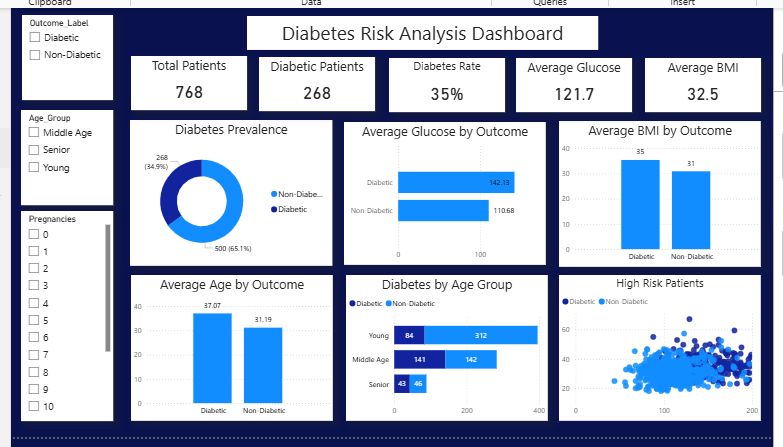
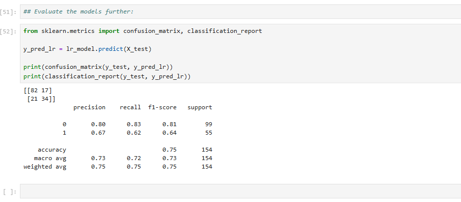

Diabetes Prediction Using Machine Learning
Machine Learning Healthcare Analytics ClassificationProject Overview
This project uses machine learning techniques to predict whether a patient is likely to develop diabetes based on medical and demographic characteristics. The goal is to support early detection and preventive healthcare interventions.
Problem Statement
Diabetes is one of the most common chronic diseases worldwide. Early identification of high-risk patients can improve treatment outcomes and reduce healthcare costs. This project develops a classification model to predict diabetes risk using patient data.
Dataset
- Dataset: Pima Indians Diabetes Dataset
- Rows: 768 Patients
- Features: 8 Medical Variables
- Target Variable: Diabetes Outcome
Features Used
- Pregnancies
- Glucose
- Blood Pressure
- Skin Thickness
- Insulin
- BMI
- Diabetes Pedigree Function
- Age
Tools & Technologies
- Python
- Pandas
- NumPy
- Matplotlib
- Seaborn
- Scikit-Learn
- Jupyter Notebook
Project Gallery



- Patients with higher glucose levels had greater diabetes risk.
- BMI showed a positive relationship with diabetes occurrence.
- Older patients were more likely to have diabetes.
- Glucose was one of the strongest predictors.
Model Development
- Data Cleaning and Preprocessing
- Feature Scaling
- Train-Test Split
- Model Training
- Model Evaluation
Machine Learning Algorithm
A Logistic Regression model was developed to predict diabetes risk based on patient health indicators such as glucose level, BMI, blood pressure, and age.
Model Performance
- Accuracy: 75%
- Precision: 75%
- Recall: 75%
- F1-Score: 75%
Model Comparison
| Model | Accuracy |
|---|---|
| Logistic Regression | 75.3% |
| Random Forest | 74.7% |
Logistic Regression achieved the highest accuracy and was selected as the final model for deployment and evaluation.
Business Value
The model can help healthcare providers identify patients at higher risk of diabetes, enabling earlier interventions, improved patient outcomes, and more efficient healthcare resource allocation.
Future Improvements
- Improve model accuracy through hyperparameter tuning.
- Explore additional healthcare features and patient risk factors.
- Deploy the model as a web application.
- Integrate the solution with cloud platforms such as AWS.